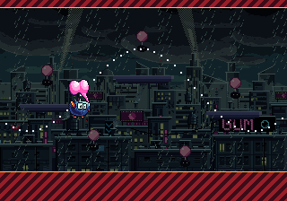
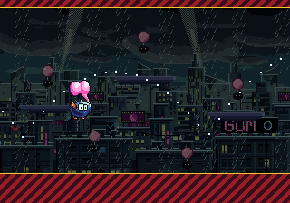
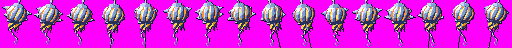
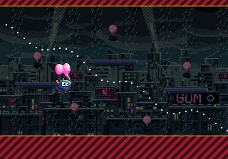

Pick one. All three loop in 16 frames, hold to 15 colours, and fit a pool object (at most 3 sprite columns). View at 100 percent browser zoom. Ranking and doubts are in README.md.
Skip-rope squall
A knot of violet storm vapour. A lightning arc is pinned to its two flanks and swings round it like a skipping rope: behind, under, in front, over.
3x, storm sky, Sootling for scale

Path on the 320 x 224 screen, shown 2x. Pale dots: the way it travels on screen while the world scrolls left at 1 px per frame. Red bands: kill strips.
Sheet, shown 2x (file is 1x, 16 frames in a row, magenta key)
Frame size 48 x 48 px, 16 frames per loop, 4 ticks per frame (15 per second)
Colours 12 plus key
Sprite columns 3 (pool object width 48 px)
Worst sprites per scanline added by one instance 3
Tiles raw 144, unique 139
Opaque bounding box over all frames x 0..47, y 9..36
Hit box proposal x 6..41, y 10..35 (36 x 26): vapour body and the inner sweep of the arc; the outer 4 px of the arc do not hurt
Path world drift 0.25 px/frame left (1.25 on screen), sine weave 46 px amplitude, period 200 frames; on screen for 314 frames
Loop seam of the simulation (largest position difference between the last two periods) 0.0008 px
Flue spinner
A turbine roof vent torn off its flue. The slots still glow furnace-hot, saw fins flick out at the rim as it spins, a loose chain trails in the wind.
3x, storm sky, Sootling for scale

Path on the 320 x 224 screen, shown 2x. Pale dots: the way it travels on screen while the world scrolls left at 1 px per frame. Red bands: kill strips.

Sheet, shown 2x (file is 1x, 16 frames in a row, magenta key)
Frame size 32 x 48 px, 16 frames per loop, 4 ticks per frame (15 per second)
Colours 12 plus key
Sprite columns 2 (pool object width 32 px)
Worst sprites per scanline added by one instance 2
Tiles raw 96, unique 96
Opaque bounding box over all frames x 0..31, y 0..47
Hit box proposal x 6..25, y 5..24 (20 x 20): the globe; collar and chain do not hurt
Path world 0.9 px/frame left (1.9 on screen), gravity 0.05, gust kick to -2.7 px/frame at y 150: skipping hops 73 px high, about 108 frames apart; on screen for 206 frames
Loop seam of the simulation (largest position difference between the last two periods) 0.0000 px
Cinder flock
A tumbling lump of chimney coal, white-hot on the windward side, with a ring of embers caught in its wake.
3x, storm sky, Sootling for scale

Path on the 320 x 224 screen, shown 2x. Pale dots: the way it travels on screen while the world scrolls left at 1 px per frame. Red bands: kill strips.
Sheet, shown 2x (file is 1x, 16 frames in a row, magenta key)
Frame size 32 x 32 px, 16 frames per loop, 4 ticks per frame (15 per second)
Colours 10 plus key
Sprite columns 2 (pool object width 32 px)
Worst sprites per scanline added by one instance 2
Tiles raw 64, unique 64
Opaque bounding box over all frames x 0..31, y 6..27
Hit box proposal x 8..23, y 9..22 (16 x 14): the coal and its inner ring; outer embers and trails do not hurt
Path rises off the floor strip on a thermal: world 0.4 px/frame left (1.4 on screen), 140 px climb with ease in and out, 9 px sway; on screen for 280 frames
Loop seam of the simulation (largest position difference between the last two periods) 0.0000 px